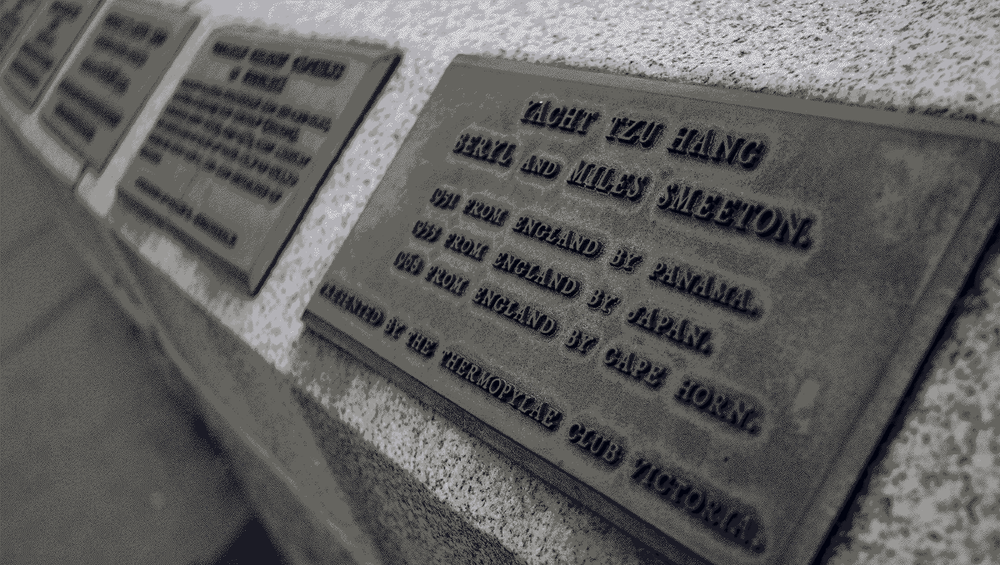
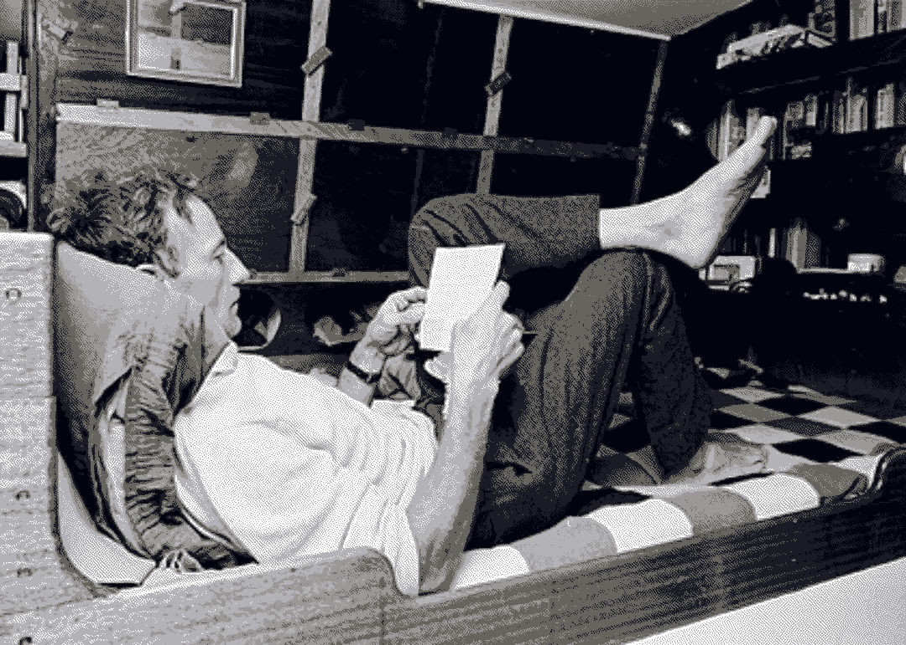

resources
Manuals
- Self Sufficient Sailor, Lin and Larry Pardey
- World Cruising Routes, Jimmy Cornell
- Thoughts, Tips and Tactics for Singlehanded Sailing, Andrew Evans
- The Glenans Manual of Sailing, Peter Davidson
- How to Sail Around the World, Hal Roth
- Seaworthy Offshore Sailboat, John Vigor
- The Complete Anchoring Handbook, Poiraud Achim Ginsberg-Klemmt
- The Marlinspike Sailor, Hervey Garrett Smith
- Sailing the Farm, Kenneth Neumeyer
- The Dinghy Cruising companion, Roger Barnes
- Taken by the Wind, Marilyn Johnson
- Boatowner’s Mechanical and Electrical Manual, Nigel Calder
Travel literature
- An Island to Oneself, Tom Neale
- North to the night, Alvah Simon
- The Curve of Time, Wylie Blanchet
- Walden and Civil Disobedience, Henry David Thoreau
- The Box Wine Sailors, Amy McCullough
- Mingming & the Art of Minimal Ocean Sailing, Roger Taylor
- The Long Way, Bernard Moitessier
Documentaries
- Life on a Little Wooden Boat
- Minimalism in a Tiny Home at Sea
- Untie the Lines
- Gypsea Stories: Wylo II
- A Rogue Mariner on the upper Thames
- Deep Water
- Cinq Ans Pour la Banquise
Inspiration
- The Simple Sailor, Roger Taylor
- Microship, Stephen K. Roberts
- The Care and Feeding of the Sailing Crew, Lin Pardey
- From Vladivostok to Otaru, Anthea
- Mollymawk
- Bosun Bird Jen and Nick Coghlan
- Sustainability: Simple Habits, Simple Boat, Sven Irvind
- TaraTari, Capucine Trochet
- Vagabond, Eric Brossier and France Pinczon du Sel
- How to scull a boat
Ideology
- Critical Engineering Manifesto
- What can a technologist do about climate change?
- Solar Punk: Notes toward a manifesto
- Design Life Cycle
- The Right to Repair
- Low Tech Magazine
- Sea Shepherd
- MV Louise Michel
- Collapse OS
- Low Tech Labs
- La Fumainerie
Ecofiction
Ship artisans
Nutrition
- Cheatsheet on Tropes Against Vegan Discourse
- Guide to Daily Nutritional Needs
- How Not to Die by Michael Greger
- The Art of Fermentation, Sandor Katz
- On Food And Cooking, Harold McGee
- Should we go vegan?